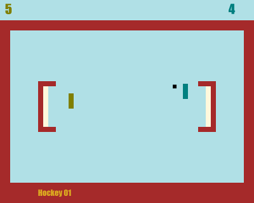
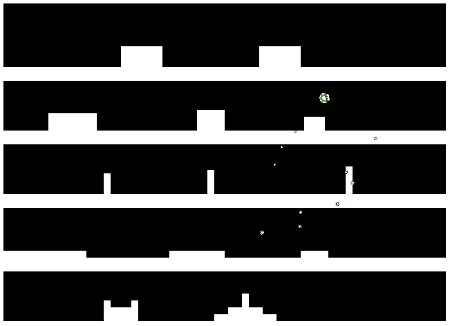

Olympics RR
Remeber good ol days!
Retro Romance is a pong clone, heavily inspired by "Video Olympics" on Atari 2600. It can be played using WASD and arrow-keys but also gamepad. Why gamepad you say? Well so you can build your own paddle using an arduino leonardo and a pot! (see github project)



Key is Space
A love/hate relationship
I wanted to use phaser.io with ES6 and webpack and followed a tutorial on a simple platformer.
I showed it to my daugther and she left in tears..
But she was never the target audience ;) (see github project)
